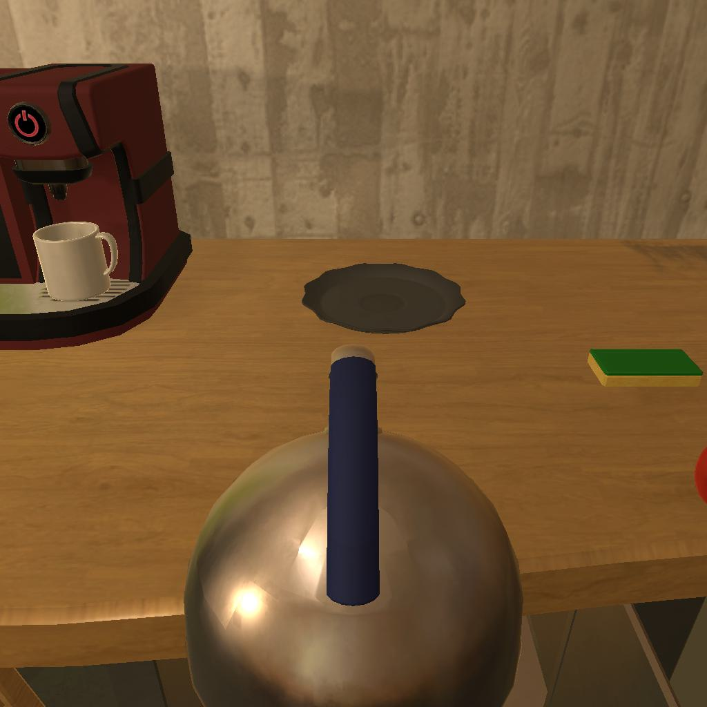

---------------------------------------------------------task: 26---------------------------------------------------------
--------------------------------------------------------------------------------------------------------------------------------------------------------------------
--------------------------------------------------------------------------------------------------------------------------------------------------------------------
Step:--------------------------------------------------------------------------17-------------------------------------------------------------------------------
----------------------------------------
VLM Prompt:
Image1:
Image2:
**Instruction**
1. Analyze the provided images to identify all visible household objects and compare the difference between images (e.h. whether the object is opened or not and taken on hand or not), focusing on those relevant to the task description "find two kettle and put them in cabinet."
2. Use the analysis of images and the task hint "The agent must find an object of the desired type, pick it up, find the correct location to place it, put it down there, then look for another object of the desired type, pick it up, return to previous location, and put it down there with the other object." to answer the question: what is the most reasonable action in the choices for the task description "find two kettle and put them in cabinet"?
3. Decide and write the answer using the template: The answer is: (i): , where i is the real number. If there is no desired object in images, search every place based on **Initial Observation** to find the object. And if no one is exactly correct, choose a similar answer.
**Initial Observation**
You are in the middle of a room. Looking quickly around you, you can see countertop (1), coffeemachine (1), cabinet (1-4), drawer (1-8), sink (1), sinkbasin (1), garbagecan (1), fridge (1), microwave (1), dresser (1), sidetable (1)
**Answer Choices**
(1): go to countertop 1
(2): go to coffeemachine 1
(3): go to cabinet 1
(4): go to drawer 1
(5): go to sink 1
(6): go to sinkbasin 1
(7): go to cabinet 3
(8): go to garbagecan 1
(9): go to cabinet 4
(10): go to drawer 2
(11): go to fridge 1
(12): go to microwave 1
(13): go to dresser 1
(14): go to sidetable 1
(15): go to drawer 3
(16): go to drawer 4
(17): go to drawer 5
(18): go to drawer 6
(19): go to drawer 7
(20): go to drawer 8
(21): open cabinet 2
(22): close cabinet 2
(23): put kettle 1 in/on cabinet 2
(24): examine kettle 1
(25): examine cabinet 2
**Answer**
Let's think step by step by following the instructions.
----------------------------------------
----------------------------------------
Original Response:
Firstly, we need to identify the kettle in the images. In both Image 1 and Image 2, there is no visible kettle on the countertop or in the immediate vicinity. Given that the task is to find two kettles and put them in a cabinet, we need to locate these kettles first.
According to the "Initial Observation," potential places to find a kettle could be the countertop, cabinet, drawer, fridge, microwave, dresser, or sidetable. Since the images do not show any kettles, we must search the areas not visible in the images.
Considering the usual placement of kettles in a household, it is most likely to be stored in a cabinet or on the countertop. Since the countertop is visible and there's no kettle there, the next logical step would be to check the cabinets.
The answer is: (21): open cabinet 2
----------------------------------------
----------------------------------------
>>> Refine Original VLM Response and Get Pure Action: open cabinet 2
----------------------------------------
-----------------------------------------------------------------
Running time: 15.047454595565796 seconds
Total Money: 13.74102
-----------------------------------------------------------------
-----------------------------------------------------------------
Text Observation:You open the cabinet 2. The cabinet 2 is open. In it, you see a houseplant 1, a faucet 1, a bread 1, a pan 1, a lettuce 1, and a knife 1.
-----------------------------------------------------------------
UNSUCCEED